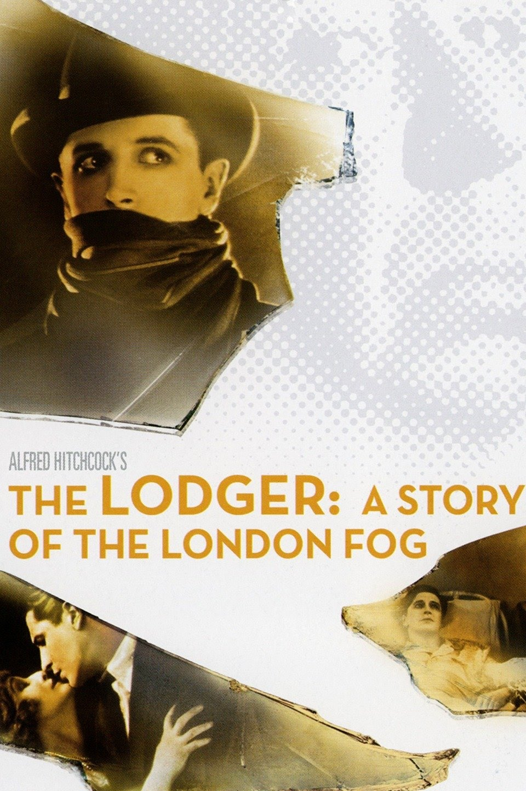

The Lodger(1927)

A very first silent movie by Sir Alfred Hitchcock. সাইলেন্ট যুগের মুভি দেখা খুব একটা সহজ কাজ না, যদি না অভিনয় আর কাহিনির জোরে কথার মাধুর্যকে ঢেকে দেয়া যায়। আর ঠিক সেইটাই এই সিনেমার সাফল্য। আলফ্রেড হিচকক রহস্য জেনারকে যেভাবে সমৃদ্ধ করেছে তার তুলনা কারো সাথেই সম্ভব না।
ঘটনার শুরু সোনালি চুলকে কেন্দ্র করে। ঠিক প্রতি মঙ্গলবার কোনো এক রহস্যময় আততায়ী একজন করে সোনালী চুলের মেয়েকে হত্যা করে রেখে যায়। লন্ডন শহরে ত্রাশের শুরু এ ঘটনা থেকেই। সোনালী চুল থাকা মানেই যেন মৃত্যুর হাতছানি। যেসব মেয়ের চুল সোনালী, তারা উইগ পরে ঢাকতে শুরু করলো। তবুও শেষ রক্ষা হয় না। এমনই কোনো এক সময়ে এক সোনালী চুলের মডেলের বাড়িতে এসে হাজির হয় অচেনা এক ভাড়াটে। প্রথম প্রথম কারো সাথেই কথা বলতে না চাওয়া এই ভাড়াটেকে একসময় বাড়ির মালিকের মেয়ে ভালোবেসে ফেলে। কিন্তু সন্দেহ গাঢ় হতে শুরু হয় যখন দেখা যায় সেই ভাড়াটেও এক মঙ্গলবার রাতে চুপিচুপি বের হয়ে যায়। অন্য রাতগুলোর মতো সে রাতেও হত্যাকান্ড হয়। তাহলে কি সেই ভাড়াটেই সিরিয়াল কিলার?
১ ঘন্টা ৩২ মিনিটের এই সিনেমার শুরুটা সহ্য করতে পারলে শেষ পর্যন্ত না দেখে উঠার জোঁ নাই। ত্রিশের দশকের মুভি হয়েও থ্রিলার জেনারে কোনো অংশে কম নয় এই মুভি।
আমার রেটিং? ১০ এ ৮।
30th July, 2021